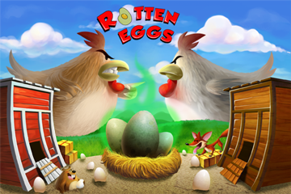

<section class="Featured">
    <div class="Frame FLC">

        <header>
            <h1>Rotten Eggs</h1>
        </header>

        

        <div class="description">
            <p>You are the top hen on the farm and are proud of your coop.  Defend it and your status against challenging hens by rolling eggs through the farm maze to “splat” the other hens.  With enough egg in their faces, they’ll be forced to move onto another farm and you’ll be top hen again.  Use designated rotten eggs to really make your point!  When rolling your eggs, be careful to avoid the many pitfalls of the farm:  A busy gopher who makes holes in your path, hungry egg-eating plants that pop out of the ground to feast and a sneaky fox that roams the farm looking for a meal.</p>
        </div>

    </div>
</section>
